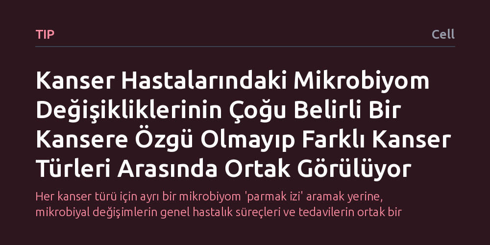

TIP · Cell · 2026-10-15
Araştırmacılar, geniş bir hasta grubunda mikrobiyom değişimlerinin farklı kanser türlerine özgüllüğünü inceledi. Eşlik eden hastalıklar ve karıştırıcı etkenler hesaba katıldığında, mikrobiyal değişikliklerin çoğunun kanser türüne özel olmayıp farklı kanserler arasında paylaşıldığı saptandı.
Her kanser türü için ayrı bir mikrobiyom 'parmak izi' aramak yerine, mikrobiyal değişimlerin genel hastalık süreçleri ve tedavilerin ortak bir sonucu olabileceğini göstererek tanı ve tedavi yaklaşımlarını yeniden düşünmeyi gerektiriyor.

Son yıllarda yapılan bilimsel çalışmalar, insan vücudunda yaşayan trilyonlarca mikroorganizmanın oluşturduğu mikrobiyomun, kanser gelişimi ve tedavi yanıtıyla yakından ilişkili olduğunu gösteriyordu. Onkoloji dünyasında oluşan genel beklenti, her kanser türünün kendine has, parmak izi gibi ayırt edici bir mikrobiyom profili barındırdığı yönündeydi. Bu kabul, gelecekte yalnızca dışkı ya da doku örneklerindeki mikrobiyal dağılıma bakılarak erken evrede kanser teşhisi konulabileceği umudunu güçlendirmişti.
Ne var ki bu beklentinin karşısında ciddi bir metodolojik soru işareti duruyordu: Kanser hastaları yalnızca kanserle değil; diyabet, hipertansiyon gibi eşlik eden kronik hastalıklarla, yaşa bağlı fizyolojik değişimlerle ve yoğun ilaç tedavileriyle de karşı karşıyadır. Bağırsak florasında gözlemlenen farklılıkların doğrudan kanserin kendisine mi ait olduğu, yoksa hastaların genel sağlık durumunun ve maruz kaldıkları diğer etkenlerin bir yansıması mı olduğu net değildi. Bu çalışma, söz konusu temel soruya yanıt aramak üzere tasarlandı.
Araştırmacılar, yapay laboratuvar modelleri yerine klinik gerçekliği doğrudan yansıtan, farklı kanser türlerini barındıran geniş bir gerçek yaşam hasta kohortunu mercek altına aldı. Bu karma hasta yapısı, tek bir organa odaklanmak yerine çok sayıda kanser tipini eş zamanlı inceleme ve mikrobiyom profillerini birbiriyle doğrudan kıyaslama olanağı sağladı.
Çalışmanın yöntemsel açıdan en güçlü yanı, karıştırıcı etkenlerin sıkı bir şekilde kontrol edilmesi oldu. Hastaların sahip olduğu ek kronik hastalıklar ve mikrobiyal dengeyi değiştirebilecek diğer klinik değişkenler istatistiksel analizlere dahil edilerek ayıklandı. Böylece araştırmacılar, mikrobiyomdaki hangi değişimlerin kanserle sahiden ilişkili olduğunu, hangilerinin ise eşlik eden diğer rahatsızlıklardan kaynaklanan sahte bağlantılar olduğunu ayrıştırmayı başardı.
Analiz sonuçları, alandaki popüler kabulleri değiştirecek net bir gerçeği ortaya koydu: "Çoğu mikrobiyom değişikliği tek tek kanserlere özgü olmaktan ziyade kanserler arasında ortaktır." Eşlik eden hastalıklar ve karıştırıcı faktörler hesaba katıldığında, belirli bir kanser türüne has olduğu sanılan bakteriyel imzaların büyük çoğunluğunun aslında farklı kanserlerde de aynı şekilde görüldüğü anlaşıldı.
Belirli bir kansere özgü ayrışmalar yalnızca çok kısıtlı bir kanser alt grubunda tespit edilebildi. Buna karşılık, yapılan ayrı analizlerde mikrobiyom yapısındaki belirgin farklılıkların kanserin türünden ziyade iki temel unsura bağlı olduğu görüldü: Hastalığın ortaya çıkış yaşı ve uygulanan tedavilere bağlı gelişen spesifik yan etkiler. Yani mikrobiyom, tümörün organından çok hastanın yaşına ve tedaviye verdiği fizyolojik yanıta göre şekilleniyordu.
Bu bulgular, mikrobiyomu evrensel bir kanser teşhis aracı olarak konumlandırmaya çalışan yaklaşımların yeniden gözden geçirilmesi gerektiğini gösteriyor. Eğer mikrobiyomdaki bozulmalar kanser türüne özel değilse, yalnızca mikrobiyal bileşime bakarak bir hastada hangi kanserin geliştiğini belirlemek yanıltıcı sonuçlar doğurabilir; zira görülen tablo kanserin özgül imzası değil, vücuttaki genel sistemik stresin ve ortak tedavilerin bir sonucu olabilir.
Diğer taraftan, mikrobiyom ile tedavi yan etkileri arasındaki ilişki, klinik onkoloji için umut verici yeni bir kapı aralıyor. Kanser tedavisi sırasında hangi hastaların ağır yan etki riski taşıdığını mikrobiyom üzerinden öngörmek ve florayı koruyucu müdahalelerle bu yan etkileri hafifletmek mümkün hale gelebilir. Çalışma, mikrobiyomun teşhis sihirbazı olmaktan ziyade, hastanın genel durumunu ve tedaviye tahammülünü izleyen kıymetli bir klinik gösterge olduğunu vurguluyor.